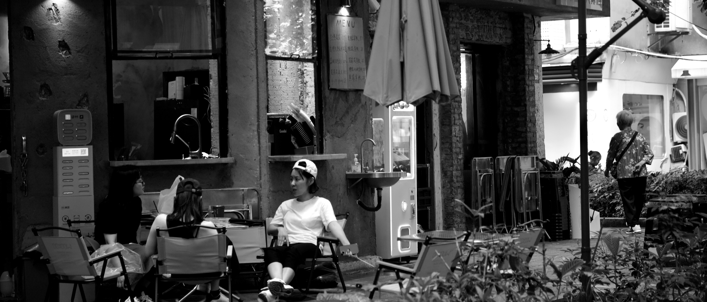

Canton, Pt. 2
下一站：体育西路
下一站：體育西路
The next station is: Tiyu Xilu
Camera: Canon EOS 6D Mark II 24-105mm f/4.0
五一毕设结题前、中期之后偷偷去广州玩。
Day 1

去西安机场路上，武警医院天桥上清晨六点的月亮。
在广州的第一顿是表妹请的烤乳鸽，吃罢沿天河路走到体育西，然后穿过六运小区，沿着花城广场往南走。
六运小区大概是珠江新城里我最喜欢的地方。在城市的奢华与忙碌中，好像突然闯入了一片宁静的峡谷。

边角的小店，打扫的阿姨，电动车，排队的人。表妹带我去里面的一家小店吃了一冰激凌，第一次吃到比抹茶还好吃的味道（也是茶，"明前龙井"）
路上有些零碎的小雨，走在那条第一次来广州刚下地铁走过的路，草地、榕树与在云中的高楼大厦，潮湿的空气，阵雨总是让人猝不及防。
诸多感慨，第一次来时好像是一切都充满希望，无限的未来可能，期待着的美国生活，如今不知还剩下那些遥远的希望。

用JPEG看白花花一片的广告牌，用回RAW才发现上面写着两个字：
"自由"
Day 2
这天走过好多的骑楼，闻着海鲜和干货的味道，听着讨价还价的广东话，走了一路。


独自行走的人，独自撑着伞行走的人，独自钓鱼的人，独自喝酒的人


石室圣心大教堂。在那边的时候，突然间下起一场雨，人们来不及躲避，下方的小卖部蓬下聚满了人。我匆忙地撑起伞，不过雨大概过了1分钟就停了。
雨前的世界显得那么不真实。

教堂。借着下雨，门前的广场已几乎无人，仅剩其本身的华丽、庄严。


上下九附近的匝道。广州的高架总是在不宽的路上，和电车的线缆缠绕着。
永庆坊。很像上海一大会址新天地那里，有好多家有意思的小店。
小孩从肯德基台阶上跳下，转身，手从胸前甩到身后，蹲下，说着一句"siu～～～"

傍晚依旧去天河吃饭，到那里突然间大雨倾盆，水滴打在商场头顶的玻璃上，伴随着雷声。和朋友说在那里见面，朋友没带伞，去超市买了一把，结果买完之后雨已经停了。
不过雨不会无缘无故来，会留下灯火与晚霞。
Day 3 & 4
凌晨又下大雨，突发奇想起来拍闪电。只剩一张拍到半边的。
早上起来后去南沙，第二天吃了早茶，最后去了一遍体育西路，留下在其中漫步的视频，然后搭乘因延误改签的飞机回到学校。
飞机起飞时，遇见了积雨云。闪电于高耸的云墙里蠢蠢欲动。
（完）